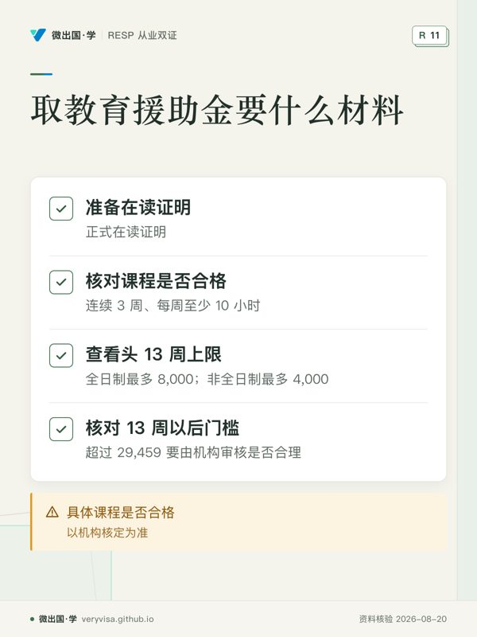
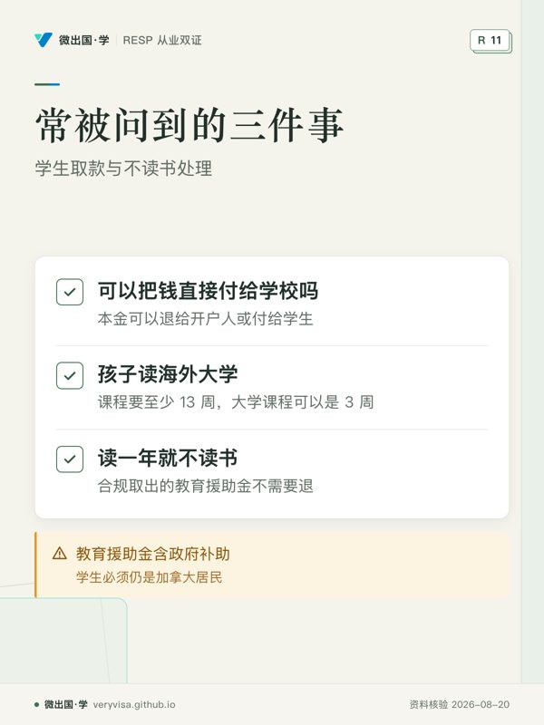

八月底，郑先生的儿子收到了大学的录取和第一学期的账单。RESP 里存了十几年，账户余额五万多。他打电话给机构：「我要取两万交学费和宿舍。」机构回答：「开学前可以先取本金；教育援助金要看在读证明，头 13 周最多 8,000。」
郑先生一头雾水：本金、教育援助金、13 周，这些词他开户时从来没听过。孩子满 18 岁以后，RESP 从「存钱」转到「取钱」，规则换了一套。
18 岁以后，什么停了、什么还在
基本补助停了。 联邦基本补助只付到孩子 17 岁那年年底，18 岁以后存进去的钱不再配补助，额度也不再累积。来源
账户照常存在。 开户后最多可以供款 31 年，来源 所以 18 岁以后仍可以往里存钱，只是没有补助，只剩延税的好处。
学习债券还能补。 学习债券的累积到孩子 15 岁为止，但申请期长得多：受益人满 18 岁后，可以在 21 岁生日前一天之前自己申请，包括自己开一个 RESP 来接这笔钱。来源 已经宣布，自 2028 年 4 月起追溯申请的年龄上限延长到 30 岁。来源 家里曾经收入不高、却没申请过的，这一步最值得做：学习债券不需要供款，最多 2,000。
钱分两类取：本金和教育援助金
RESP 里的钱，取出时分成两类，税务完全不同：
本金（你存进去的钱）：取出时免税退回，称为「高等教育付款」（PSE）。来源 本金可以退给开户人，也可以直接付给学生。
教育援助金（EAP，由政府补助加上全部投资收益组成）：只能付给在读的学生，计入学生当年的收入。来源 学生读书那几年收入通常很低，个人基本免税额、学费抵免都能抵掉一大部分，所以很多学生这笔钱实际交税很少，甚至不交。
所以取钱的顺序，是一个值得认真想的问题：一般的思路是先多取教育援助金、少动本金，因为教育援助金要在学生读书期间取完，而本金什么时候取都免税。孩子读书年限越短，这个排序越重要。下面的计算器可以按孩子的学制与账户构成，看每年取多少、学生大约落在哪个收入区间。
取教育援助金要什么材料、有什么上限
在读证明。 机构在发放教育援助金之前，会要求看学生的正式在读证明。来源 加拿大境内的合格全日制课程，至少连续 3 周、每周至少 10 小时的课时或实习。来源 大学、学院、职业学校、学徒培训一般都能用；具体某个课程是否合格，以机构核定为准。
头 13 周的上限。 全日制学生在连续入学的头 13 周里，教育援助金最多 8,000；非全日制每 13 周最多 4,000。来源 郑先生遇到的就是这一条：开学前要交的两万，教育援助金最多先拿 8,000，其余可以用本金补上。
13 周以后。 过了头 13 周，教育援助金就没有这个上限了，但 CRA 每年公布一个「合理性」门槛，2026 年是 29,459，超过的要由机构审核是否合理。来源
学生必须是加拿大居民，教育援助金里才能含政府补助。 来源 孩子出国读书、并且变成了非居民，教育援助金里的补助部分就发不出来。出国留学的完整处理见出国与离境。
18 岁以后的几个常见情况
孩子晚一两年才读书。 不急。账户可以继续存在，最长存续期一般是 35 年。来源 孩子晚几年再上学，照样能取。
孩子确定不读书。 政府补助要退还，本金免税领回，收益的处理有几种选择，详见孩子不读书。家庭计划里有弟弟妹妹的，基本补助可以转给弟妹用。
教育援助金取不完。 学制短、账户大的家庭会遇到这种情况，详见教育援助金取不完。
郑先生最后的安排
开学前，他先取了 8,000 教育援助金，其余学费和宿舍用本金支付，本金退到他自己账户再转给学校。第二学期起，他每学期给儿子取一笔教育援助金，本金尽量留着。第二年春天报税时，儿子的教育援助金计入儿子的收入，在学费抵免和个人免税额之后，要交的税很少。
他顺便让儿子自己上网查了一下：儿子小时候家里有两年收入在学习债券线以下。儿子 19 岁，自己去机构补申请了学习债券。
取款前先把账户「拆开看」
很多家庭到孩子上大学时，才第一次仔细看 RESP 的对账单。取款前，请机构把账户拆成三块告诉你：
- 本金： 你一共存了多少；
- 政府补助： 基本补助、额外补助、学习债券、省里的补助各有多少；
- 投资收益： 账户增长的部分。
教育援助金由后两块组成。以一个每年存 2,500、拿满补助的孩子为例，本金可能三四万，补助七千多，收益取决于这些年的投资。把三块数字摆出来，才能排出取款计划：假设孩子读四年，教育援助金大致可以分到四年里取，让孩子每年的收入都保持在较低水平。
如果孩子读的是一两年的课程，或者账户里收益很多，教育援助金可能取不完。每年教育援助金的数额超过合理性门槛（2026 年 29,459）要经机构审核，来源 所以要尽早规划，见教育援助金取不完。
常被问到的三件事
「可以把钱直接付给学校吗？」 教育援助金付给学生，本金可以退给开户人或付给学生。来源 学费通常还是由学生或家长自己交给学校，RESP 的钱是报销和生活来源。
「孩子读的是海外大学，能取吗？」 可以。在国外读书，课程要至少 13 周，大学课程可以是 3 周。来源 但教育援助金里要含政府补助，学生必须仍是加拿大居民。来源 短期出国读书、家还在加拿大的，通常仍是居民；整家移居国外的，另当别论（见出国与离境）。
「读了一年就不读了，已取的要退吗？」 已经合规取出的教育援助金不需要退。账户里剩下的钱，按孩子不读书的规则处理，见孩子不读书；有弟弟妹妹的家庭计划，补助可以转给弟妹用。
带走这张清单
- 18 岁以后补助停了，但学习债券 21 岁前可以补申请（2028 年 4 月起拟延至 30 岁）。
- 录取后向机构要一份取款说明，问清本金、补助、收益各有多少。
- 准备学校的正式在读证明。
- 全日制头 13 周教育援助金最多 8,000，其余用本金补。
- 一般先多取教育援助金，本金留着。
- 学生要报税，把教育援助金报进自己的收入。
从业者要多知道的
取款阶段客户最常问的不是投资，而是「为什么只能取 8,000」「这笔钱算谁的收入」。收到在读证明后，主动给出本金、补助、收益的余额和一个取款顺序的建议草案；受益人是否仍为加拿大居民要先问（见信息披露与费用、KYC 与从业行为）。
来源
- canada.ca，RESP 能加多少钱：https://www.canada.ca/en/services/benefits/education/education-savings/estimating-amounts.html
- canada.ca，加拿大学习债券：https://www.canada.ca/en/services/benefits/education/education-savings/canada-learning-bond.html
- canada.ca，管理 RESP：https://www.canada.ca/en/services/benefits/education/education-savings/managing-plan.html
- canada.ca，用 RESP 支付教育费用：https://www.canada.ca/en/services/benefits/education/education-savings/paying-education.html
- CRA，RESP 付款、转移与滚存：https://www.canada.ca/en/revenue-agency/services/tax/individuals/topics/registered-education-savings-plans-resps/payments-resp.html
- CRA，RESP 公告第 1 号（2026 合理性门槛）：https://www.canada.ca/en/revenue-agency/services/tax/registered-plans-administrators/bulletins/resp-bulletin-1.html
- 可退税抵免与福利（税务站）：https://veryvisa.github.io/academy-tax-personal/docs/ca-core-10-refundable-credits-benefits.html
本页是一般性说明，不替你做税务或投资决定；个案以 ESDC、CRA 的核定和持牌专业人士的意见为准。
听、看、翻：18 岁以后：上学前的取款准备
制作中
制作中
制作中
制作中
本页知识卡
不看正文也能拿到这一节的核心内容：先看导读，再看图。点图放大，左右翻页。

- 先看先看材料与上限两格，决定申请前要准备什么。
- 易漏课程合格范围与门槛存在机构核定情形，需复核。
- 下一步看讲义，带课程资格问题找持牌专业人士。

- 先看先看三个问题对应的处理方式，覆盖常见取款场景。
- 易漏海外读书和居民身份会影响政府补助部分，需复核。
- 下一步看知识卡，带居民身份问题找持牌专业人士。